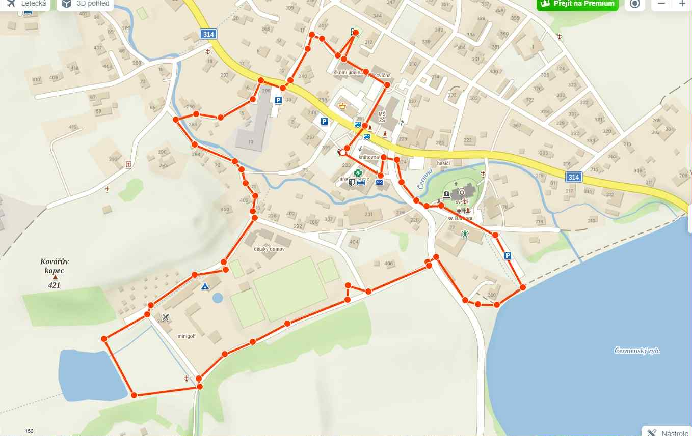

Ukradená zmrzlina – vytvořeno s chutí
Všechna práva vyhrazena. Tento příběh je chráněn autorským zákonem. Jakékoliv kopírování, šíření nebo úpravy bez písemného souhlasu autora jsou zakázány.
Vítejte v chladivém detektivním příběhu plném chutí, tajemství a zmrazených stop.
Pozor, došlo k závažnému zločinu ‼️
Rodinný recept na legendární zmrzlinu Budkových byl ukraden. Bez něj se nedá vyrobit naše proslulá zmrzlina — a to nejen kvůli poměru jednotlivých složek, ale také kvůli složitému, léta pilovanému postupu.
Produkce se zastavila!
Rodina je zoufalá!
Co bude dál? 🧐
Případ převzal sám vrchní komisař Martin Kopeček, muž s chladnou hlavou a instinktem ledního medvěda.
Spolu s ním na případu pracuje tým složený z:
Vyšetřování běží na plné obrátky 💥
Po dni intenzivní práce se podařilo zúžit okruh podezřelých na pět jmen – všechno to jsou cukráři z ulice Sladká, kteří se netají svým talentem ani ambicemi:
Všichni vyrábějí i zmrzlinu a všichni měli důvod odstranit konkurenci.
Ale – a tady je háček – každý z nich má na první pohled neprůstřelné alibi 🧐
Pár dní po krádeži to vypadá, že případ zamrzl. Komisař Kopeček se proto rozhodne přizvat k vyšetřování poslíčka Alfiho Zajíčka – nenápadného doručovatele, který se v ulici Sladká často pohybuje a všímá si. Zároveň se Kopeček vrací na místo činu a znovu vyslýchá rodinu Budkových. Tentokrát však získá pár klíčových detailů:
A právě tyto střípky vedou Kopečka k zásadní dedukci:
Pachatel neodolal pokušení a snažil se recept co nejdříve rozluštit. A proto den po krádeži nemohl nabídnout svůj obvyklý prémiový zákusek. Vitrína zůstala prázdná… a podezření dostalo konkrétní tvar.
A tak začíná závěrečná fáze pátrání – a tentokrát už s jasným plánem, jak pachatele odhalit…
Přidáš se?
Detektivní stezka tě provede různými stanovišti. Na každém z nich tě čeká indicie, která tě přiblíží k odhalení pachatele. Celou trasu najdeš na mapě zde: Zobrazit mapu stezky
